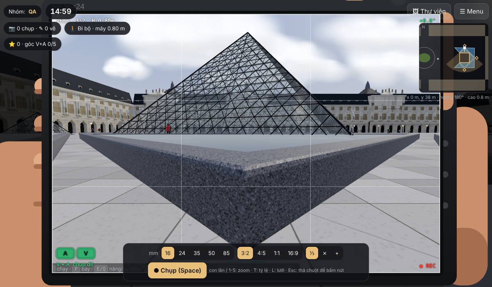
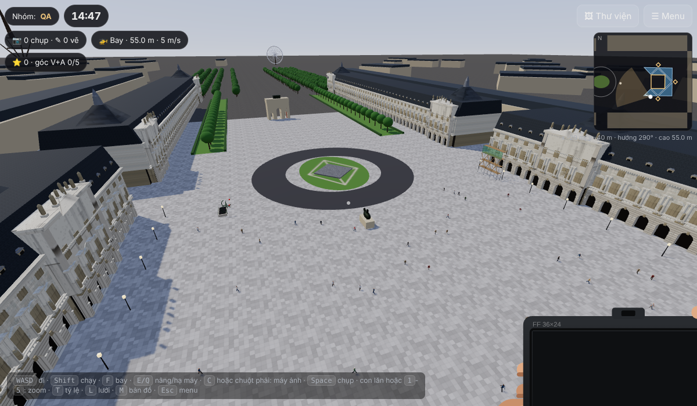
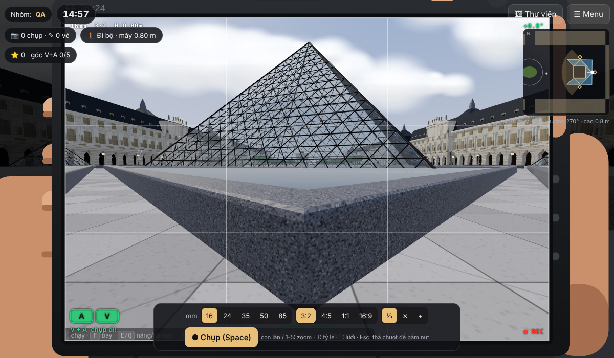
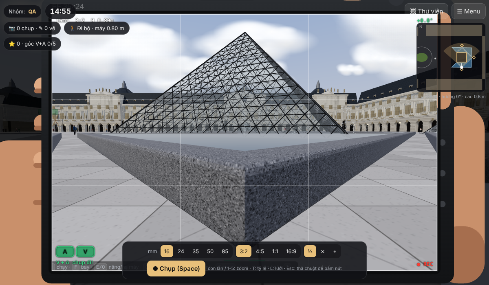
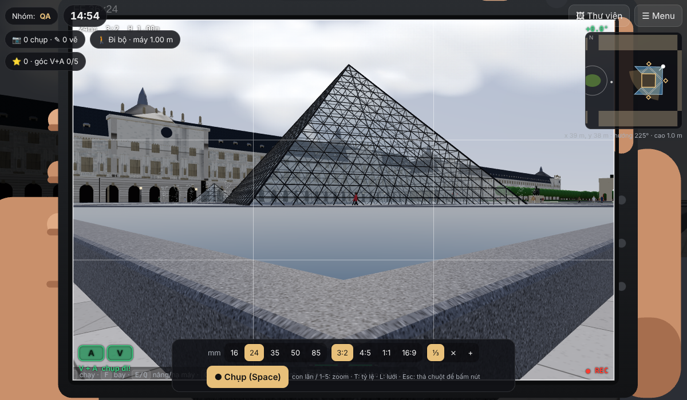
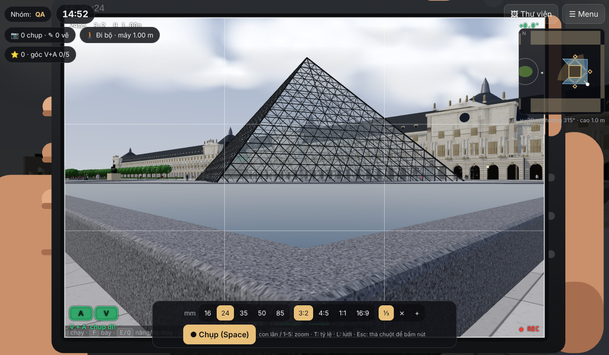
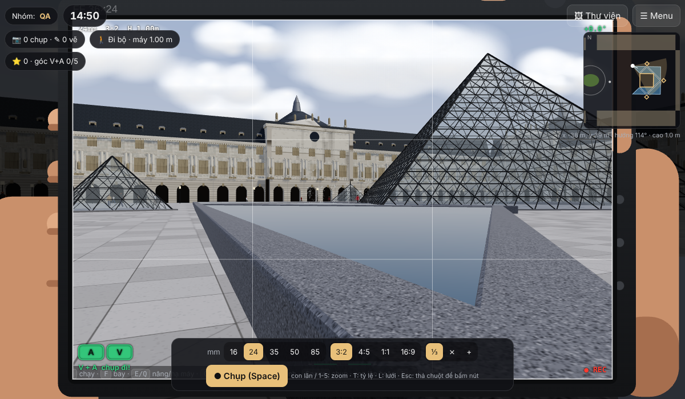
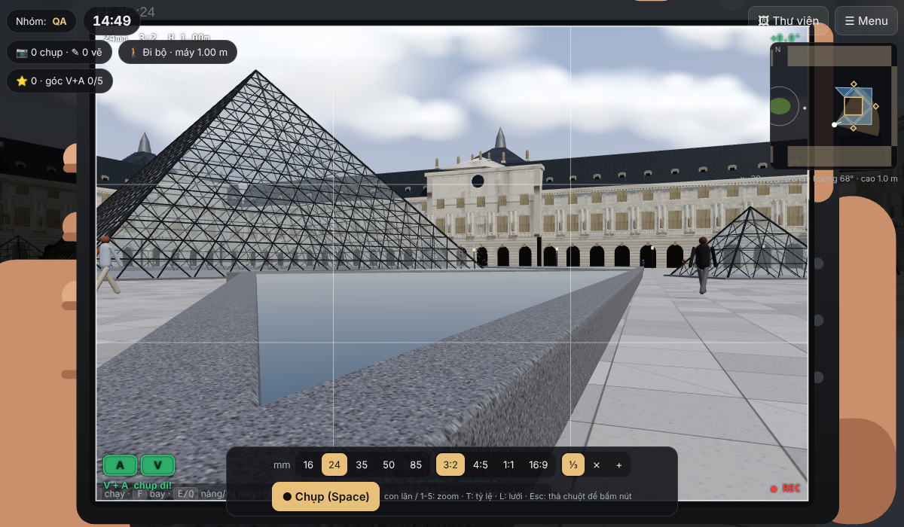

1
Hồ trong bắc
- Toạ độ
- (0.4, 35.9) m
- Mũi hồ
- 93°
- Hướng
- 181° · nhìn về nam
- Tiêu cự
- 16-20 mm · máy 0,5-1 m
Chính diện, đối xứng. Kim tự tháp nhỏ N ngay sau lưng, chỉ lùi được 2-3 m nên cần góc rộng để lấy trọn đáy.
Mặt bằng hồ lấy từ OpenStreetMap, luật tính và bảng dưới do test tự động của game sinh ra. Ảnh tham chiếu chụp từ chính game ở tư thế máy đáp án, cùng bố cục học viên sẽ thấy.


Chính diện, đối xứng. Kim tự tháp nhỏ N ngay sau lưng, chỉ lùi được 2-3 m nên cần góc rộng để lấy trọn đáy.

Chính diện, đối xứng, Arc du Carrousel và Louis XIV làm hậu cảnh phía xa.

Chính diện, đối xứng; buổi chiều mặt trời chếch trái, mặt kính sáng.

Chéo, sống kim tự tháp ở giữa khung. Từ trên cao chỉ thấy một góc vuông; phải đứng sát mép mới thành V.

Chéo, sống kim tự tháp ở giữa khung. Góc hay bị bỏ sót nhất.
Góc 1, 2, 3 ở đỉnh hồ trong: kim tự tháp nhỏ ngay sau lưng, chỉ lùi được 2-3 m, nên cần 16 mm để lấy trọn đáy. Góc 4, 5 là góc vuông của hồ góc: từ trên cao chỉ thấy một góc vuông, phải đứng sát mép nhìn chéo vào kim tự tháp mới thành V. Đây là điểm dạy khi chữa bài.

Kim tự tháp chỉ nằm một nửa trong lòng V: 3 trên 4 góc đáy ở trong, một góc nằm đúng trên cạnh V. Chấp nhận nếu nhóm lập luận được vì sao vẫn đọc ra V.

Kim tự tháp chỉ nằm một nửa trong lòng V: 3 trên 4 góc đáy ở trong, một góc nằm đúng trên cạnh V. Chấp nhận nếu nhóm lập luận được vì sao vẫn đọc ra V.
| Vị trí (x, y) m | Mũi hồ | Góc | Lý do |
|---|---|---|---|
| (18.7, 18.0) | Hồ trong đông | 45° | Mũi hồ chạm góc đáy kim tự tháp, kim tự tháp thành một cạnh của V |
| (18.1, -18.1) | Hồ trong đông | 45° | Mũi hồ chạm góc đáy kim tự tháp, kim tự tháp thành một cạnh của V |
| (37.7, 2.2) | Hồ góc đông bắc | 46° | V mở sang ngang hoặc ra ngoài, không chứa kim tự tháp |
| (2.2, 37.6) | Hồ góc đông bắc | 44° | V mở sang ngang hoặc ra ngoài, không chứa kim tự tháp |
| (-1.4, 37.7) | Hồ nửa tây bắc | 44° | V mở sang ngang hoặc ra ngoài, không chứa kim tự tháp |
| (-19.9, 20.2) | Hồ nửa tây bắc | 90° | Kim tự tháp ở sau lưng hoặc ngoài lòng V |
| (-18.3, 18.4) | Hồ trong bắc | 44° | Mũi hồ chạm góc đáy kim tự tháp, kim tự tháp thành một cạnh của V |
| (18.7, 18.0) | Hồ trong bắc | 44° | Mũi hồ chạm góc đáy kim tự tháp, kim tự tháp thành một cạnh của V |
| (1.7, -37.5) | Hồ góc đông nam | 44° | V mở sang ngang hoặc ra ngoài, không chứa kim tự tháp |
| (37.7, -2.8) | Hồ góc đông nam | 45° | V mở sang ngang hoặc ra ngoài, không chứa kim tự tháp |
| (-1.8, -37.6) | Hồ nửa tây nam | 43° | V mở sang ngang hoặc ra ngoài, không chứa kim tự tháp |
| (-20.3, -19.8) | Hồ nửa tây nam | 92° | Kim tự tháp ở sau lưng hoặc ngoài lòng V |
| (18.1, -18.1) | Hồ trong nam | 44° | Mũi hồ chạm góc đáy kim tự tháp, kim tự tháp thành một cạnh của V |
| (-18.4, -18.1) | Hồ trong nam | 44° | Mũi hồ chạm góc đáy kim tự tháp, kim tự tháp thành một cạnh của V |
| Mã | Chủ thể trong game | Vị trí | Gợi ý tìm | Điểm |
|---|---|---|---|---|
| X | Giàn giáo trùng tu với thanh chéo Saint-André | (-120, 70) | Đầu tây cánh Richelieu, nhìn lên tầng hai | +40 |
| C | Cổng Métro Art Nouveau kiểu Guimard, tay sắt uốn cong, đèn đỏ | (-126, -52) | Tây nam quảng trường, biển MÉTROPOLITAIN xanh | +40 |
| Hành động | Điểm |
|---|---|
| Chụp một ảnh | +10 |
| Ảnh có chữ A (đỉnh và đáy kim tự tháp trong khung) | +20 |
| Ảnh có chữ V (đứng sát mũi hồ, nhìn theo phân giác) | +20 |
| Máy cân bằng, nghiêng dưới 1° | +5 |
| Đỉnh kim tự tháp ở 1/3 trên khung | +5 |
| V + A tại góc chuẩn | +30 |
| Lần đầu khám phá một góc chuẩn, tối đa 5 | +50 mỗi góc |
| V + A tại góc tranh luận T1 / T2 | +15 |
| Easter egg X hoặc C lần đầu | +40 mỗi cái |
| Vẽ A, V, chấm đỏ và ghi một câu cho một ảnh | +15 mỗi ảnh |
| Trả lời đúng câu hỏi cuối | +100 |
Sao mỗi ảnh: 3 sao từ 80 điểm, 2 sao từ 45, còn lại 1 sao. Ảnh chụp sau khi dùng Gợi ý vẫn được điểm, dashboard ghi "đã dùng gợi ý".
Hoà điểm: ưu tiên nhóm không dùng gợi ý, rồi nhóm có nhiều ảnh 3 sao hơn, rồi nhóm nộp sớm hơn theo giờ trên dashboard.
Không hợp lệ: ảnh chụp từ cửa sổ hoặc khi bay mà nhóm khai là đứng chụp (game tự gắn nhãn, không sửa được), ảnh của thiết bị khác (mỗi thiết bị một kho ảnh và mã riêng), vẽ sai quy ước (A nét liền, V nét đứt).
Chữa bài 10 phút: mở dashboard, chiếu bản đồ vị trí cuối của các nhóm, bật chế độ giảng viên trong game với overlay 5 đáp án xanh và 3 trường hợp vàng, bấm "đến vị trí" lần lượt 1 → 5, đối chiếu ảnh nhóm, công bố đáp án 5, trao giải.
?mode=teacher&pin=1789louvre-va/